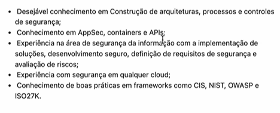
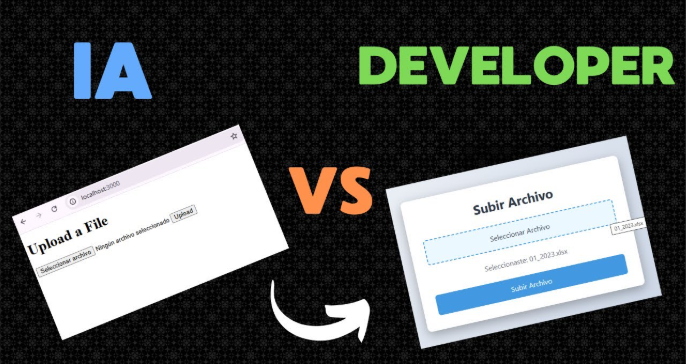
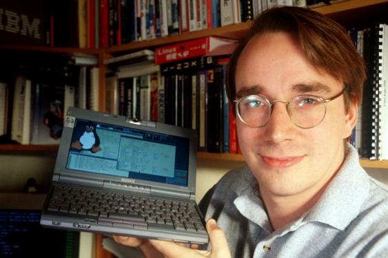
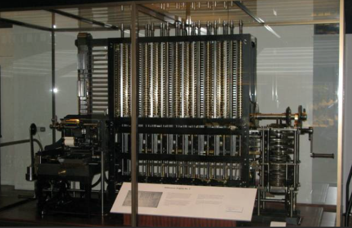

Diferencial requisitado básico por empresas para impedir geradores de IA.

Programadores IA vs Programadores manuais, esse é o debate que pode mudar rapidamente o futuro de 2026 pra frente.

Programador Linus, um dos mais importantes da história da programação.

Primeira programação na história.